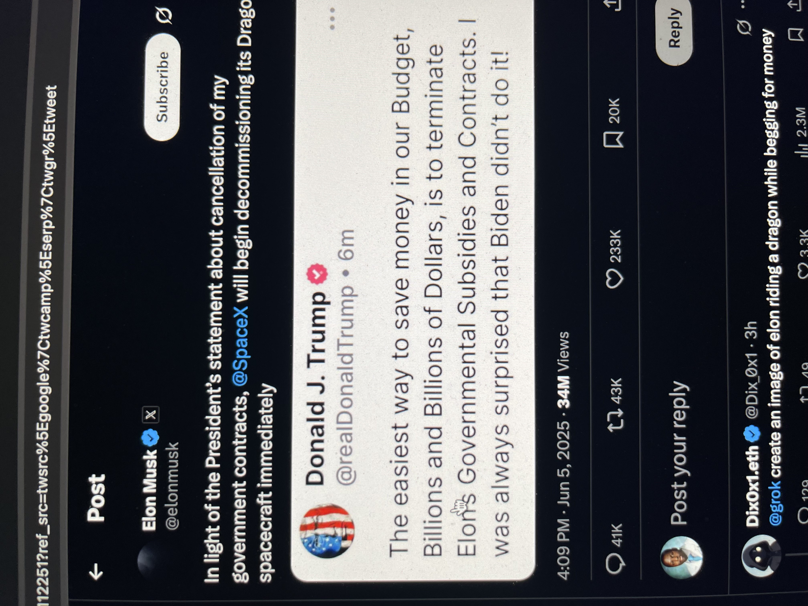

Musk vs. Trump Twitter Exchange

Screenshot of the Twitter exchange regarding SpaceX contracts
This Twitter exchange between Elon Musk, Donald Trump, and a user requesting a satirical image of Elon riding a dragon falls squarely into the Informational layer of the stack, with Tactical and Existential undertones.
Informational Layer (Primary)
- The tweets are fragments of a larger, noisy discourse: political posturing, corporate reactions, and public mockery.
- The data is incomplete (e.g., no context on which contracts are cut, no policy details), yet it triggers immediate reactions (SpaceX's decommissioning threat, Grok meme request).
- The 34M views metric amplifies the informational weight, but the content is reduced to symbolic gestures (Trump's "Billions and Billions" rhetoric, Musk's performative defiance).
Tactical Undertones
- Musk's response ("decommissioning Dragon immediately") is tactical improvisation—a public gambit to pressure or negotiate.
- The user's meme request (@grok) is tactical trolling, weaponizing absurdity to undercut the seriousness of the conflict.
Existential Thread
- Beneath the informational noise, the stakes are existential for SpaceX (contracts = survival) and for workers (jobs tied to Dragon's operations). But this reality is buried under abstraction (political point-scoring, viral metrics).
- The exchange embodies the 2020s' existential paradox: existential risks (space infrastructure, budgets) are debated as memes, not material consequences.
Why Not Operational/Strategic?
- Operational: The actual workers building Dragon spacecraft aren't visible here; their daily grind is erased by high-profile theatrics.
- Strategic: Both Musk and Trump are posturing strategy (budget cuts vs. corporate retaliation), but the tweets lack concrete planning—just signaling.
🧭 Verdict: Informational with Tactical flair, flirting with Existential weight but drowning it in noise.
The stack's layers collapse when information becomes a playground for power games, and improvisation (tactics) is the only response left.